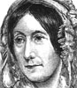
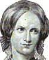
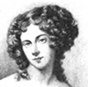

Alison Booth
Padwick, Constance E. Heroines of Healing: A Book for Leaders Amongst Working Girls. [London]: UCME/Church Missionary Society, 1915. Title Variant: . . . Amongst Senior Girls. London: UCME, 1922; Edinburgh House, 1927.
Blue paper cover, frayed spine, black-ink image on front cover of uniformed nurse standing over a dark-skinned patient on a cot in what could be a public square in the East. 62 pages, priced 4d. (fourpence) "From All Missionary Societies" in the same series as a618 by Padwick. A short prefce "To the Leader" dated Thorney, July 1915, urges lessons to link "the service of the spirit with the physical activities" of the girls, and seems to suggest that England had become too materialist before the war.
Actual contents: Doctor Susie Rijnhart, Pioneer. I. The Beginning of the Adventure; II. Was the Adventure Worth While; Ramabai, the Mother of Mukti. III. The Path of Preparation; IV. The Home at Mukti; Mary Read, the Mother of the Lepers. V. The Lonely Path; VI. The Heights Beautiful. Each section begins with the name and epithet phrase above an epigraph, then the first chapter on a new page, with Date of Main Incidents in parentheses. A paragraph on sources is followed by one headed "Leader's Thoughts on Giving the Lesson," with a note that "if the lesson is taken with a Bible Class," the specific text should be read. Right above the start of the narrative, an Introduction in bold type could be a model for what the leader says, and throughout such bold interjections provide model questions to ask the class. Sections of the story have small-caps titles guiding the response, and the chapter concludes with a page of "After the Lesson." In short, this is a very thorough handy teacher's manual as well as biographical anthology. The activities of the heroines of healing are dramatically and at times realistically told amid the broad statements of precept. Mary Reed, a leper herself, served the lepers of India as Florence Nightingale had longed to do from her own invalid bed (55).
TOC: Dr. Susie Rijnhart; Ramabai; Mary Reed.
Search OCLC WorldCat for this title.
Search Google Books for this title.
Padwick, Constance E. White Heroines in Africa: A Book for Leaders Amongst Working Girls. [London]: UCME, 1914.
TOC: Mary Moffat, Home-Maker; Anna Hinderer, Lover of Children; Christina Coillard, Adventurer into the Unknown.
RichesPhyllis M. Riches, An Analytical Bibliography of Universal Collected Biography, Comprising Books Published in the English Tongue in Great Britain and Ireland, America, and the British Dominions (London: The Library Association, 1934). Lives of missionaries “to enlighten uneducated working women to moral ways of living,” (abstract in WorldCat).
Search OCLC WorldCat for this title.
Search Google Books for this title.
P[ardon], G[eorge] F[rederick]. Illustrious Women Who Have Distinguished Themselves for Virtue, Piety and Benevolence. London: Blackwood, 1861; 1868.
TOC: Queen Victoria; Princess Frederick William of Prussia, the Princess Royal; The Empress Eugénie; The Duchess of Kent; Queen Adelaide; Lady Jane Grey; Mary, Queen of Scots; Queen Caroline; Queen Marie Antoinette; Josephine, Queen and Empress; Lady Rachel Russell; Elizabeth Fry, the Prison Reformer; Harriet Martineau; Amelia Opie; Lady Huntingdon; Hannah More; Eliza Cook; Felicia Hemans; Mrs. Bunyan; Charlotte Corday; Frederika Bremer; L. E. L.; Jenny Lind; Joan of Arc; Miss Burdett Coutts; Florence Nightingale; Elizabeth, Anna, and Emily Blackwell.
British Library. A writer on parlor games.
Search OCLC WorldCat for this title.
Search Google Books for this title.
Parkes, Bessie Rayner. [Bessie R. Belloc]. Historic Nuns. London: Duckworth, 1898; 1899. St. Louis: Herder; Edinburgh and London: Sands, 1911.
TOC: Mary Aikenhead; Rose Philippine Duchesne; Catherine McAuley; Saint Elizabeth Ann Seton.
This work published under married name of Belloc; as a participant in Victorian activism and journalism, she was Bessie Rayner Parkes.
Search OCLC WorldCat for this title.
Search Google Books for this title.
Parkes, Bessie Rayner. Vignettes: Twelve Biographical Sketches from the Englishwoman's Journal. London and New York: A. Strahan, 1866.
TOC: Madame Swetchine; La S?ur Rosalie; Mme Pape-Carpantier; Mme de Lamartine; Mme Luce of Algiers; Governor Winthrop's Wife; Miss Cornelia Knight; Bianca Milesi Mojon; Mrs. Delany; Harriot K. Hunt; Miss Bosanquet; Mrs. Jameson. .
Author of “Essays on Women's Work.” Cambridge University undated library stamp. Label on spine Sm. 23 (cf. a923, Yonge, Sm. 22), and lower spine, 40. Someone has pencilled a grammatical correction at the end of Parkes' preface, “each...may truly be said that they did worthy work in the world,” crossing out "they" and inserting “she.” Red cloth cover with gilt and black rectangular frame pattern; titlepage has red subtitle and other detail. Elegant engraved patterns at headings of chapters.
Search OCLC WorldCat for this title.
Search Google Books for this title.
Parkman, Mary R. Heroines of Service: Mary Lyon; Alice Freeman Palmer; Clara Barton; Frances Willard; Julia Ward Howe; Anna Shaw; Mary Antin; Alice C. Fletcher; Mary Slessor of Calabar; Madame Curie; Jane Addams. London and New York: Century, 1917; 1919; Appleton, 1938.
TOC: Mary Lyon; Alice Freeman Palmer; Clara Barton; Frances E. Willard; Julia Ward Howe; Anna Howard Shaw; Mary Antin; Alice C. Fletcher; Mary Slessor; Marie Skldowska Curie; Jane Addams.
-
 Mary Lyon
Mary Lyon -
 Alice Freeman Palmer
Alice Freeman Palmer -
Clara Barton
-
 Frances E. Willard
Frances E. Willard -
 The statue of Miss Wilard in the Capitol at Washington
The statue of Miss Wilard in the Capitol at Washington -
 Julia Ward Howe
Julia Ward Howe -
Anna Howard Shaw
-
Mary Antin
-
 Alice C. Fletcher
Alice C. Fletcher -
 Mary Slessor
Mary Slessor -
 Marie Sklodowska Curie
Marie Sklodowska Curie
Search OCLC WorldCat for this title.
Search Google Books for this title.
Parry, Emma Louise. Woman in the Reformation. Philadelphia: Lutheran, 1882.
TOC: Woman in the Reformation; Margaretha or Gretchen Luther; Ursula Cotta; The Nuns of Nipstch; Katharine von Bora; Catherine Krapp; Anna Reinhard; Idelette de Bures; The Monastery of Konigsfeldt; Clara May and the Dominicans; Anne Askew; Elizabeth of Brandenburg; The Genevese Women; Elizabeth of Brunswick; The Three Catherines; Paul and Claudine Levet; Marguerite de Valois; Renee, Duchess of Ferrara; Olympia Morata; Jeanne D'Albret; The Women of Spain; Leanor de Cineros; Maria de Bohorques; Mother and Daughter; Charlotte de Bourbon; In the Netherlands; Katherine Willoughby; The Modern Reformation.
Search OCLC WorldCat for this title.
Search Google Books for this title.
Parton, James. Daughters of Genius: A Series of Sketches of Authors, Artists, Reformers, and Heroines, Queens, Princesses, and Women of Society, Women Eccentric and Peculiar, from the Most Recent and Authentic Sources. Illustrated. Philadelphia: Hubbard, 1885; 1886; 1888. New York: American, 1890.
TOC: Sally Bush; The Brontë Sisters; Queen Victoria; Elizabeth Barrett Browning; Mrs. Stowe and Uncle Tom's cabin; Miss Alcott; George Eliot; Princess Louise; Fanny Mendelssohn; Angelica Kaufmann; Baroness Burdett-Coutts; Girlhood of Queen Elizabeth; The Wife of Thomas Carlyle; The Wife of Benedict Arnold; Adelaide Procter; Lady Bloomfield; The Mother of Victor Hugo; Laura Bridgeman; The Wife of George Washington in her Workroom at Mount Vernon; Madame de Staël and Napoleon Bonaparte; The Wife of Frederick the Great; The Flight of Eugénie; Caroline Herschel; Charlotte Cushman; Maria Mitchell; Mrs. Trollope; Adelaide Phillips; Two Queens; the Daughters of James II of England; An Evening with Rachel; Josephine and Bonaparte; Lady Morgan; Maria Theresa; Lady Franklin; Madame de Miramion; Peg O'Neal; Mrs. L.M. Monmouth, and How She Lived on Forty Dollars a Year; Trial of Jeanne Darc, Commonly Called Joan of Arc; Harriet Martineau; The Wife of Lafayette; Betsy Patterson, Otherwise Madame Jerome Bonaparte of Baltimore; Some Ladies of the Old School; Toru Dutt; George Sand.
A series of close editions begins with Noted Women (Hartford: Phoenix, 1883). Daughters has identical Preface to Noted Women , crediting “my beloved niece, Miss Ethel Parton. Many of these articles I could not have done without her aid” (4), with the addition in Daughters : “The chapters on Queen Victoria and Elizabeth Barrett Browning, subsequently added, are from the pen of Prof. John P. Lamberton, of Philadelphia” (4). Subjects not in Noted Women : the Brontës, Victoria, E. B. Browning, George Sand, and Mrs. L. M. Monmouth and “Some Ladies of the Old School.” Parton [1822-1891] wrote numerous individual biographies of men, primarily American statesmen or military leaders; political commentaries; studies of comic literature; and various topical works ( Smoking and Drinking , 1868; A History of the Sewing Machine , 1867).
-
 Josephine
Josephine -
 Sally Bush
Sally Bush -
 Sally Bush, Saturday Night
Sally Bush, Saturday Night -
 Queen Victoria
Queen Victoria -
Mrs. Harriet Beecher Stowe
-
 Miss Louisa M. Alcott
Miss Louisa M. Alcott -
 Princess Louise
Princess Louise -
Queen Elizabeth
-
 Adelaide Procter
Adelaide Procter -
The Mother of Victor Hugo
-
 Madame de Stael
Madame de Stael -
 Wife of Frederick the Great
Wife of Frederick the Great -
 Charlotte Cushman
Charlotte Cushman -
Maria Mitchell
-
 Adelaide Phillips
Adelaide Phillips -
 Maria Theresa
Maria Theresa -
 Lady Franklin
Lady Franklin -
Joan of Arc
-
 Harriet Martineau
Harriet Martineau -
 Betsey Patterson
Betsey Patterson -
 Toru Dutt and Sister
Toru Dutt and Sister -
George Sand
Search OCLC WorldCat for this title.
Search Google Books for this title.
Parton, James. Eminent Women: A Series of Sketches of Women Who Have Won Distinction by Their Genius and Achievements as Authors, Artists, Actors, Rulers, or within the Precincts of the Home. New York: Alden; Philadelphia: Hubbard, [1880s?]. New York: International; n.p.: Edgewood, 1880. New York: Lovell, 1890.
TOC: Sally Bush; The Brontë Sisters; Queen Victoria; Elizabeth Barrett Browning; Mrs. Stowe. and Uncle Tom's Cabin; Miss Alcott; George Eliot; Princess Louise; Fanny Mendelssohn; Angelica Kaufmann; Baroness Burdett-Coutts; Girlhood of Queen Elizabeth; The Wife of Thomas Carlyle; The Wife of Benedict Arnold; Adelaide Proctor; Lady Bloomfield; The Mother of Victor Hugo; Laura Bridgman; The Wife of George Washington in Her Workroom at Mt. Vernon; Madame de Staël and Napoleon Bonaparte; The Wife of Frederick the Great; The Flight of Eugénie; Caroline Herschel.
-
Josephine
-
Sally Bush
-
Queen Victoria
-
Mrs. Harriet Beecher Stowe
-
Miss Louisa M. Alcott
-
Princess Louise
-
Adelaide Procter
-
Madame de Stael
-
Wife of Frederick the Great
Search OCLC WorldCat for this title.
Search Google Books for this title.
Parton, James. The World's Famous Women: A Series of Sketches of Women Who Have Won Distinction by Their Genius and Achievements as Authors, Artists, Actors, Rulers, or within the Precincts of the Home. New York: Alden; American, 1888. Philadelphia: Hubbard, 1889. New York: Lovell, n.p.: Edgewood, 1890. New York: International, [1890s?].
TOC: Charlotte Cushman; Maria Mitchell; Mrs. Trollope; Adelaide Phillips; Two Queens, the Daughters of James II of England; An Evening with Rachel; Josephine and Bonaparte; Lady Morgan; Maria Theresa; Lady Franklin; Madame de Miramion; Peg O'Neal; Mrs. L.M. Monmouth, and How She Lived on Forty Dollars a Year; Trial of Jeanne Darc, Commonly Called Joan of Arc; Harriet Martineau; The Wife of LaFayette; Betsy Patterson, Otherwise Madame Jerome Bonaparte of Baltimore; Some Ladies of the Old School; Toru Dutt; George Sand. *Pop Chart.
Search OCLC WorldCat for this title.
Search Google Books for this title.
Parton, James. Fanny Fern: A Memorial Volume. Containing Her Select Writings and a Memoir. By James Parton. With illustrations by Arthur Lumley. New York: Carleton, 1873; 1874.
NOT:=auto/biography. An individual “life,” of Mrs. James Parton, fellow contributor to Eminent Women of the Age . Also listed under Fanny Fern [pseud.].
Search OCLC WorldCat for this title.
Search Google Books for this title.
Parton, James. Noted Women of Europe and America: Authors, Artists, Reformers, and Heroines, Queens, Princesses and Women of Society, Women Eccentric or Peculiar: From the Most Recent and Authentic Sources. Hartford, CT: Phoenix, 1883. Boston: Wilson, 1884.
TOC: Sally Bush (Lincoln's Stepmother); Lydia Maria Child; Miss Prudence Crandall (Quaker Teacher Willing to Help Blacks); Harriet Beecher Stowe; Louisa May Alcott; George Eliot; Princess Louise; Fanny Mendelssohn; Angelica Kaufmann; Baroness Burdett-Coutts; Celia Thaxter; Jane Carlyle; Mrs. Benedict Arnold; Adelaide Procter; Lady Bloomfield; Mother of Victor Hugo; Laura Bridgman; Martha Washington; Madame de Stael; Elizabeth Christine, Wife of Frederick the Great; Empress Eugenie; Caroline Herschel; Phoebe Yates Pember; Maria Mitchell; Mrs. Trollope; Adelaide Phillips; Queen Anne; Queen Mary (as in William &); Mary Somerville; Lady Morgan; Maria Theresa; Lady Franklin; Mme. de Miramion; Rachel; Josephine; Joan of Arc; Queen Elizabeth; Mme. Lafayette; Betty Patterson, or Mme Jerome Bonaparte; Toru Dutt (Christian Poet of India); Peg O'Neal; Mrs. Eaton; Harriet Martineau; Grace Darling. *Pop Chart.
Subjects not in Daughters of Genius : Crandall, Pember. Subjects also in World's Famous : Mme. Jerome Bonaparte, Toru Dutt, Peg O'Neal, Mme. Lafayette, Lady Franklin, Rachel, Joan of Arc, Adelaide Phillips, Maria Mitchell.
-
Sally Bush
-
 Lydia Maria Child
Lydia Maria Child -
Mrs. Harriet Beecher Stowe
-
Miss Louisa M. Alcott
-
Princess Louise
-
Baroness Burdett-Coutts
-
Adelaide Procter
-
Laura Bridgman
-
Madame de Stael
-
Wife of Frederick the Great
-
Caroline Herschel
-
Maria Mitchell
-
Adelaide Phillips
-
Mary Somerville
-
Maria Theresa
-
Rachel
-
Queen Elizabeth
-
Betsey Patterson
-
Toru Dutt and Sister
-
Harriet Martineau
-
 Grace Darling
Grace Darling -
George Sand
-
Charlotte Cushman
-
Charlotte Bronte
Search OCLC WorldCat for this title.
Search Google Books for this title.
---, ed. Some Noted Princes, Authors and Statesmen of Our Time By Canon Farrar, James T. Fields, Archibald Forbes, E. P. Whipple, James Parton, Louise Chandler Moulton, and others. New York: Crowell; Columbus: Estill; Norwich, CT: Bill, 1885; 1886.
NOT:=male-female collective biography. Includes biography of Queen Victoria by Louise Chandler Moulton.
Search OCLC WorldCat for this title.
Search Google Books for this title.
Parton, James, et al. Eminent Women of the Age: Being Narratives of the Lives and Deeds of the Most [/More] Prominent Women of the Present Generation. By James Parton, Horace Greeley, T. W. Higginson, J. S. C. Abbott, Professor James M. Hoppin, William Winter, Theodore Tilton, Fanny Fern, Grace Greenwood, Mrs. E. C. Stanton, etc. Richly Illustrated with Fourteen Steel Engravings. Hartford, CT: Betts, 1868; 1869; 1871; 1872; 1873; 1877; 1879; 1888; Park, 1880. Chicago: Gibbs & Nichols, 1869.
TOC: Florence Nightingale; Lydia Maria Child; Fanny Fern, Mrs. Parton; Lydia H. Sigourney; Mrs. Frances Anne Kemble; Eugenie, Empress of the French; Grace Greenwood, Mrs. Lippincott; Alice and Phebe Cary; Margaret Fuller Ossoli; Gail Hamilton, Miss Dodge; Elizabeth Barrett Browning; Jenny Lind Goldschmidt; Mrs. Emma Willard; Mrs. Marianne P. Dascomb; Harriet Beecher Stowe; Mrs. Elizabeth Cady Stanton; Sarah and Angelina Grimke; Abby Kelley; Mary Grew; Anne Greene Phillips; Lucretia Mott; Caroline M. Severance; Frances D. Gage; Abby Hutchinson; Antoinette Brown; Lucy Stone; Mrs. Caroline H. Dall; Mrs. C. I. H. Nichols; Susan B. Anthony; Olympia Brown; Victoria, Queen of England; Adelaide Ristori; Euphrosyne Parepa Rosa; Ellen Tree, Mrs. Charles Kean; Clara Louisa Kellogg; Kate Bateman, Mrs. George Crowe; Helen Faucit, Mrs. Theordore Martin; Anna Elizabeth Dickinson; Mrs. Clemence S. Lozier, M.D.; Miss Elizabeth Blackwell, M.D.; Miss Harriot K. Hunt, M.D.; Mrs. Hannah E. Longshore, M.D.; Miss Ann Preston, M.D.; Camilla Urso; Harriet G. Hosmer; Rosa Bonheur; Mrs. Julia Ward Howe.
In spite of similar title, this earlier, multi-authored anthology of different biographical clusters of living or recent subjects overlaps with some of Parton's later compilations, but they are not simply reissues. Bound with John S. Jenkins, Heroines of History , 2 vol. in 1, Hartford: Park, 1880.
-
 Rosa Bonheur
Rosa Bonheur -
Florence Nightingale
-
 Lydia H. Sigourney
Lydia H. Sigourney -
Eugenie, Empress of the French
-
 Margaret Fuller Ossoli
Margaret Fuller Ossoli -
 Elizabeth Barrett Browning
Elizabeth Barrett Browning -
 Mrs. Emma Willard
Mrs. Emma Willard -
Mrs. Elizabeth Cady Stanton
-
Lucretia Mott
-
Victoria, Queen of England
-
 Adelaide Ristori
Adelaide Ristori -
 Anna E. Dickinson
Anna E. Dickinson -
Mrs. C. S. Lozier, M.D.
-
Harriet Hosmer
Search OCLC WorldCat for this title.
Search Google Books for this title.
Parton, James, et al. People's Book of Biography; or, Short Lives of the Most Interesting Persons of All Ages and Countries by James Parton. Richly Illustrated with Twelve Steel Engravings. New York: Virtue & Yorston, 1868; 1873. Hartford, CT: Hale, 1868; 1869.
NOT:=male-female collective biography.
TOC: The Wife of Thomas Jefferson; The Wife of James Madison; The Wife of Daniel Webster; Jeanne Darc; The Wife of Andrew Jackson; Mrs. Sigourney.
Search OCLC WorldCat for this title.
Search Google Books for this title.
Pavry, Bapsy. The Heroines of Ancient Persia: Stories Retold from the Shahnama of Firdausi. Cambridge: Cambridge University Press, 1930.
TOC: Firdausi and the Shahnama; Faranak; Shahrinaz and Arnawaz; Rudaba; Tahmina; Gurdafrid; Farangis; Manizha; Katayun; Humai and Bih Afrid; Queen Humai; Nahid; Rushanak; Gulnar; Dilafruz-i-Farrukhpai; Sapinud; Gurdya; Shirin; Purandukht; Azarmdukht.
Search OCLC WorldCat for this title.
Search Google Books for this title.
Payne, Gertrude Irene. Famous Women: Outline Studies for Girl's Bible Class. Toledo, OH: YWCA, 1913; 1915.
Search OCLC WorldCat for this title.
Search Google Books for this title.
Peabody, Emily Clough. Lives Worth Living: Studies of Women, Biblical and Modern, Especially Adapted for Groups of Young Women in Churches and Clubs. Chicago: University of Chicago Press, 1915; 1916; 1921; 1923.
TOC: Mary of Bethany, The True Friend; Woman’s Opportunity in Friendship; Hannah, A Noble Mother; Woman’s Priviledge in the Home; Deborah, A Champion of Israel; Woman’s Public Influence; Ruth, The Immigrant; Women Immigrants in America; Lydia, A Christian Business Woman; Woman’s Place in Industry; Corinna Shattuck, Missionary Heroine of Oorfa; Florence Nightingale, Pioneer in a Profession; Woman as an Interpreter of the Faith.
Search OCLC WorldCat for this title.
Search Google Books for this title.
Peacock, Virginia Tatnall. Famous American Belles of the Nineteenth Century. Illustrated. Philadelphia and London: Lippincott, 1900; 1901.
TOC: Marcia Burns (Mrs. John Peter Van Ness.); Theodosia Burr (Mrs. Joseph Alston); Elizabeth Patterson (Madame Jerome Bonaparte); The Caton Sisters; Margaret O'Neill (Mrs. John H. Eaton); Cora Livingston (Mrs. Thomas Pennant Barton); Emily Marshall (Mrs. William Foster Otis); Octavia Walton (Madame Le Vert); Fanny Taylor (Mrs. Thomas Harding Ellis); Jessie Benton (Mrs. John C. Frémont); Sallie Ward (Mrs. George F. Downs); Harriet Lane (Mrs. Henry Elliott Johnston); Adèle Cutts (Mrs. Robert Williams); Emilie Schaumburg (Mrs. Hughes-Hallett); Kate Chase (Mrs. William Spague); Mattie Ould (Mrs. Oliver Schoolcraft); Jennie Jerome (Lady Randolph Churchill); Nellie Hazeltine (Mrs. Frederick W. Paramore); Mary Victoria Leiter (Baroness Curzon of Keldeston); New York as a Social Centre.
Illustrated chapters on nineteen 19th-c. women “of so pre-eminent a beauty, so dazzling a wit, so powerful a magnetism, that their names belong no less to the history of their country than those of the men whose genius has raised it to the rank it holds to-day among the nations of the earth.” Peacock believes the "highest type" of "political and...social genius" stamp an impression "of thei remarkable personalities upon their time." Her examples demonstrate that in America it was possible to rise to eminence, even in the 19th c. with limited travel and poor communication (before the telegraph). Her examples are chosen for fame "beyond question" and because they "represent their period and locality." The aim is to “recognize the power of a queenly personality”; the hope is that the 20th c. will “‘perpetuate the empire which beauty first established.’” Preface dated Paris June 22, 1900. Final chapter: "New York as Social Centre."
-
 Famous American Belles of the Nineteenth Century
Famous American Belles of the Nineteenth Century -
Marcia Burns (Mrs. John Peter Van Ness)
-
fromaportraitbyQuincon.jpg) Elizabeth Patterson (Madame Jerome Bonaparte)
Elizabeth Patterson (Madame Jerome Bonaparte) -
FromportraitbySirThomasLawrence.jpg) Mary Caton (Lady Wellesley)
Mary Caton (Lady Wellesley) -
Cora Livingston (Mrs. Thomas Pennant Barton)
-
Octavia Walton (Madame LeVert)
-
ByThomasSully.jpg) Sally Chevalier (Mrs. Abram Warwick) By Thomas Sully
Sally Chevalier (Mrs. Abram Warwick) By Thomas Sully -
Fromaminiature.jpg) Sallie Ward (Mrs.George F. Downs) From a miniature
Sallie Ward (Mrs.George F. Downs) From a miniature -
FromphotographbyJuliusUlke.jpg) Harriet Lane (Mrs. Henry Elliott Johnston)
Harriet Lane (Mrs. Henry Elliott Johnston) -
FromPortraitbyGeorgePeterA.Healy.jpg) Adele Cutts (Mrs. Robert Williams)
Adele Cutts (Mrs. Robert Williams) -
Emilie Schaumburg (Mrs. Hughes-Hallett)
-
Kate Chase (Mrs. William Sprague)
-
FromphotographbyGeorgeS.Cook.jpg) Mattie Ould (Mrs. Oliver Schoolcraft)
Mattie Ould (Mrs. Oliver Schoolcraft) -
.jpg) Lizzie Cabell (Mrs. Albert Ritchie
Lizzie Cabell (Mrs. Albert Ritchie -
Mary Triplett (Mrs. Philip Haxall)
-
FromphotographbyJ.C.Strauss.jpg) Nellie Hazeltine (Mrs. Frederick W. Paramore)
Nellie Hazeltine (Mrs. Frederick W. Paramore) -
FromthepaintingbyH.Schmiechen.jpg) Jennie Chamberlain (Lady Naylor-Leyland)
Jennie Chamberlain (Lady Naylor-Leyland) -
Mattie Mitchell (Duchesse de Rochefoucald)
-
FromphotographbyMissAliceHughes.jpg) Mary Victoria Leiter (Baroness Curzon of Kedleston)
Mary Victoria Leiter (Baroness Curzon of Kedleston) -
Miss May Handy
-
.jpg) Catherine Duer (Mrs. Clarence MacKay
Catherine Duer (Mrs. Clarence MacKay
Search OCLC WorldCat for this title.
Search Google Books for this title.
Pennock, Meta Rutter, ed. Makers of Nursing History: Portraits and Pen Sketches of a Hundred and Nine Prominent Women. New York: Lakeside, 1928; 1940.
TOC: Madame Louise le Gras; Mlle. Jeanne Mance; Elizabeth Gurney Fry; Frederike Munster Fliedner; Gertrude Reichardt; Catherine M'Auley; Dorothea Lynde Dix; Florence Nightingale; Sister Helen; Clara Barton; Contributions of Religious Communities (Mother Frances Shervier, Mother Teresa Bonzel, Catharine Kasper, Mother Cabrini, Sister Marianneof Molokai, Mother Joseph Lynch, Mother d'Youville, Elizabeth Bayley Seton); Jane Stuart Woolsey; Linda Richards; Adah B. Thoms; Isabel Hampton Robb; Irene Sutliffe; Mary Agney Sniveley; Sister Mary Ignatius Feeney; Mary Adelaide Nutting; Anne C. Jamme; Helen Hartley Jankins; Anna Caroline Maxwell; Sister Elisabeth Fedde; Mary Agnes O'Donnell; Mabel T. Boardman; Jane A. Delano; Helen Scott Hay; Clara Dutton Noyes; Eleanor Robson Belmont; Elizabeth Smellie; Annie W. Goodrich; Ella Phillips Crandall; Frances Payne Bolton; Lillian Wald; Julia Stimson; Julia O. Flikke; Myn M. Hoffman; J. Beatrice Bowman; Lucy Minnigerode; Katherine S. Read; Mary A. Hickey; Elinor D. Gregg; Mary Beard; Ida F. Butler; Mary Gladwin; Eleanor McGarvah; Mary Sewall Gardner; Lystra E. Gretter; Charlotte MacLeod; Flora Madeline Shaw; Mrs. William Church Osborn; Helen N. Joy; Emma Louise Warr; Emily L. Loveridge; Frances M. Ott; Berta E. Dreyfus; Helen F. Greaney; Isabel M. Stewart; Maude B. Muse; Nellie X. Hawkinson; S. Lillian Clayton; Elizabeth Miller; Marion T. Brockway; Sally Lucas Jean; Laura R. Logan; Hazel Corbin; Carolyn Conant Van Blarcom; Elizabeth C. Burgess; Bessie Baker; Julia St. Lo Mellichamp; Ida M. Cannon; Harriet L. Leete; Minnie Goodnow; Stella Boothe Vail; Gladys Sellew; V. May Macdonald; Agnes Dillon Randolph; Margaret Francis Sirch; Lavinia Lloyd Dock; Diana Clifford Kimber; Amy Elizabeth Pope; Anna L. Gibson; Sophia F. Palmer; Bertha Harmer; Cora E. Simpson; Anna D. Wolf; Susan E. Tracy; Elsie M. Lawler; Manelva Wylie Keller; Marguerite Wales; Ethel Swope; Carrie M. Hall; Lucy C. Ayers; Elizabeth Gordon Fox; Bessie Ingersoll Cutler; Alice G. Carr; Hazel A. Goff; Florence Dakin; Ethel Gordon Fenwick; Louise Macpherson Coleman; Dr. Anna Hamilton; Grace M. Fairley; Helen F. Draper; Ellen N. La Motte; Nina Diadamia Gage; Maude H. Mellish Wilson; Euphemia J. Taylor.
Search OCLC WorldCat for this title.
Search Google Books for this title.
Pepper, Mary Sifton. Maids and Matrons of New France. Toronto: Morang, 1901; 1902. Boston: Little, Brown, 1901.
TOC: Pioneer Women of Acadia; Pioneer Women of Quebec; Maids of Montreal; Advent of the Carignan Regiment.
Biographies of French Canadian women.

Search OCLC WorldCat for this title.
Search Google Books for this title.
Philip, Robert. The Marthas; or, the Varieties of Female Piety. New York: Carter, 1836; 1848; Appleton, 1836; 1837; 1844; 1847.
Philip [1791-1858] also wrote The Young Man's Closet Library , Intro. Albert Barnes. 3d ed. New York: R. Carter, 1857. Primarily advice/conduct, but in the “Bible Types” tradition. See Tabor, Marys ; Stewart, Thornton-Cook, and Humphrey, titles on Elizabeths .
TOC: Martha and the Marthas; Varieties, from Timidity: Rachel’s Leprosy; Varieties, from Oversight, Rachel’s Exile; Varieties, from Mistakes: Rachel’s Cure; Varieties, from Inattention; Varieties, from Mistrust; Varieties, from Modesty; Varieties, from Fretfulness.
Search OCLC WorldCat for this title.
Search Google Books for this title.
Philip, Robert. The Marys; or, The Beauty of Female Holiness. London: Virtue, 1835; 1838. New York: Appleton, 1836; 1837; 1839; Carter, 1851.
At head of title: The Lady's Closet Library.
TOC: A Mother’s Hinderances Duly Weighed; A Daughter’s Principles Analyzed; Emblems of Holiness; A Matron’s Timidity Explained; The Marys at the Cross; The Marys at the Sepulchre; Partialities in Holiness; Christians Holy Temples.
Search OCLC WorldCat for this title.
Search Google Books for this title.
Philip, Robert. The Mothers of Scripture: Showing Their Influence on Their Sons. London: Ward, Lock, and Tyler, 1870.
Chapter titles of this illustrated Biblical advice book: The Peculiarities of Christianity towards Mothers; A Maternal Lamp; Eve's Maternal Character; Maternal Influence on Isaac; Maternal Influence on Jacob; Maternal Influence on Joseph; Maternal Influence on Moses; Maternal Influence on Samuel; Maternal Influence on David; Maternal Influence on Solomon; Maternal Influence on John the Baptist; Maternal Influence on the Saviour. A heading above chapter one reads "The Hannahs," for no obvious reason, and chapter begins "British and American maternal character wants only a larger infusion of Christian principle, in order to rival that of the mothers in Israel...."
Search OCLC WorldCat for this title.
Search Google Books for this title.
Pickrell, Annie Doom. Pioneer Women in Texas. Austin, TX: Steck, 1929; Jenkins, 1970; State House 1991.
NOT= Local compendium. A collection of “biographical sketches” of women who lived in Texas prior to 1845. The collection gives a 1-2 page sketch of approximately 80 women.
Search OCLC WorldCat for this title.
Search Google Books for this title.
Pioneer Women Teachers of Texas. n.p.: Delta Kappa Gamma Society, Alpha State Organization, 1940.
Search OCLC WorldCat for this title.
Search Google Books for this title.
Pitman, Mrs. Emma R[aymond]. Heroines of the Missionary Field. London and New York: Cassell, 1880.
TOC: Mrs. Mary Moffat, of the Kuruman, South Africa; Mrs. Maria Regina Christina Gobat, of Jerusalem; Mrs. Hannah Catherine Mullen, of Calcutta; Mrs. Emily C. Judson, of Burmah; Mrs. Mary Williams, of the South Seas; Miss Fedelia Fiske, of Persia; Mrs. Mary M. Ellis, of the South Seas; Mrs. Dorothy Jones, of the West Indies; Mrs. Jane Chalmers, of Rarotonga and New Guinea; Mrs. Anna Hindeger, of Ibadan, West Africa; Mrs. Sarah Smith, of Madras; Mrs. Rebecca Wakefield, of Ribé, East Africa; Miss Susan B. Higgins, of Yokohama, Japan; Mrs. Hannah Kilham, of Sierra Leone; Mrs. Mary Hope, of Kunnunkulum, India; Mrs. Ann H. Judson, of Burmah; Mrs. Valentine, of Jeypore, North India; Mrs. Harriet Newell, of India; Mrs. Margaret Wilson, of Bombay; Miss Letitia A. Campbell, of Pekin, China; Mrs. Martha Jowett, of Malta; Mrs. Krusé, of Egypt; Miss Mary Gunson, of China; Mrs. Krapf, of Mombas, East Africa; Mrs. Eliza Ann Foster, of Jamaica; Miss Louisa Gomez, of Calcutta; Brief Memorials of Two Missionary Sisters: Mrs. Mary Cryer, of India, Miss Margaret Burton, of Ceylong.
Title page begins with the quote, "The women of all lands for Jesus" in caps; Authoress of "Vestina's Martydom," "Profit and Loss," "Margaret Mervyn's Cross," etc. Dedication reads, "To Robert Arthingon, Esq., whose prompt and munificent efforts for the evangelisation of the 'Dark Continent,' especially in the regions around Lake Tanganyika, have so largely contributed to the establishment and support of missions in Central Africa, this volume is respectfully dedicated, by permission." Each chapter begins with a prayer or religious poem. Illustrations throughout book of places and scenes of life in mission countries, along with some portraits of the featured women in their respective chapters. Eight pages of publisher's advertisements in the back.
Search OCLC WorldCat for this title.
Search Google Books for this title.
Pitman, Mrs. Emma R[aymond]. Lady Missionaries in Foreign Lands. New York: Revell, 1887; 1889. London: Partridge, 1889.
TOC: Mrs. Ann Hasseltine Judson of Burmah; Mrs. Johnston of the West Indies; Mrs. Gobat of Abyssinia and Jerusalem; Mrs. Wilkinson of Zululand; Mrs. Cargill of the Friendly and Fiji Islands.
Pitman, Mrs. Emma R[aymond]. Lady Missionaries in Many Lands. London: Pickering & Inglis, [1880s?]; 1929.Same subjects as preceding.
Search OCLC WorldCat for this title.
Search Google Books for this title.
Pitman, Mrs. Emma R[aymond]. Missionary Heroines in Eastern Lands: Woman's Work in Mission Fields. London: Partridge, 1884; 1895. New York: Revell, [1890s?]. London: Pickering & Inglis, 1932.
TOC: Alexina Mackay Ruthquist; Elizabeth Maria Thompson; Mary McGeorge; Mary Lousia Whately.
Search OCLC WorldCat for this title.
Search Google Books for this title.
Pitman, Mrs. Emma R[aymond]. Lady Hymn Writers. London and New York: Nelson, 1892.
TOC: God's Singers; Psalms and Hymns; Hymn Writers for the Sanctuary; Minor Hymn Writers; Hymn Writers for the Quiet Hour; Hymn Writers who were also Poetesses; Writers of Children's Hymns; Queenly and Noble Hymn Writers; A Hindu Hymn Writer; Translators of Hymns; Favourite Single Poems.
Search OCLC WorldCat for this title.
Search Google Books for this title.
Polkinghorne, Ruby Kathleen, and Polkinghorne [i.e., Mabel Irene Rutherford]. Stories of Famous Women. London: University of London Press, 1933.
Search OCLC WorldCat for this title.
Search Google Books for this title.
Pomeroy, Sarah Gertrude. Little-Known Sisters of Well-Known Men. Boston: Estes, 1912.
TOC: Some Brothers and Their Sisters; Mary Sidney (the Countess of Pembroke); Mary Ann Lamb; Dorothy Wordsworth; Elizabeth Whittier; Sarianna Browning; Hannah Macaulay (Lady Trevelyan); Sarah Disraeli; Sophia Thoreau; Elisa W.S. Parkman.
Search OCLC WorldCat for this title.
Search Google Books for this title.
Pool, John J. Woman's Influence in the East: As Shown in the Noble Lives of Past Queens and Princesses of India. London: Stock, 1892.
TOC: Sita, the Consort of Rama; The Princess Draupadi; The Princess of Canouje; Sultana Rezia; The Ranee of Argal; Dewal Devi, Princess of Guzerat; Pudmini of Cheetore; Pretal, the Village Maiden Who Become a Princess; Princess Korumdevi; Sooja Bae, Princess of Boondi; Tara Rae, the Wife of Prithwi Raj; Queen Kurnarath; The Empress Noor Jehan, the Light of the World; Mumtaza Zemani, the Consort of Shah Jehan; Princess Aesha; The Ranee of Jodpore; The Princess of Roopnagurh; The Begum Sombre; Ranee Sahib Kour of Pattiala; The Virgin Princess Kishna; Princess Damayanti; Savitri.
Abstract (WorldCat): Pool recounts the lives of influential Indian women throughout history to show that their history has not been characterized only by oppression. The book features a list of books "used in connection with this work, and now gratefully acknowledged," and the last page provides the table of contents and press reviews of The Life of H.M. Queen Victoria, Empress of India , another work by the author.
Search OCLC WorldCat for this title.
Search Google Books for this title.
Pope-Hennessy, Dame Una Birch . Three English Women in America. London: Benn, 1929.
Lively and well-researched narratives of the travels of Frances Trollope, Fanny Kemble, Harriet Martineau. Pope-Hennessy was a prolific biographer: Agnes Strickland, Biographer of the Queens of England, 1796-1874 (London: Chatto & Windus, 1940), and separate lives of Charles Kingsley, Empress Alexandra, Walter Scott, Charles Dickens, Edgar Allan Poe, and Anna van Schurman, Artist, Scholar, Saint (1909).
Search OCLC WorldCat for this title.
Search Google Books for this title.
Portigliotti, Giuseppe. Some Fascinating Women of the Renaissance. Translated by Bernard Miall. London: Allen & Unwin; New York: Brentano's, 1929.
Opposite the title page is an advertisement with reviews for The Borgias, (New York: AA Knopf, 1928), a book by the same author. Included throughout the book are photographs of artistic representations of the subjects (medals, paintings, portraits, frescoes, etc.), and there are two pages of publisher's advertisements in the back of the book.
TOC: Illustrations; A Flower of the Cloister (Cecilia Gonzaga); Sacred and Profane Love (Fra Filippo Lippi, Lucrezia Buti); The Romance of a Pope (Pope Pius II); A Votive Temple (Isotta da Rimini, Sigismondo Malatesta); An Arcadian Prelude (Simonetta); Perfect Love (Tommasina Spinola, King Louis XII); A Lady Light and Learned (Tullia d'Aragona); "Non Moritura" (Giulia Gonzaga, Cardinal Ippolito de' Medici); A Tragic Passion (Non-biographical account of the love affair between Violante Garlonia and Marcello Capece); An Adventuress on the Throne (Bianca Capello); Index.
Search OCLC WorldCat for this title.
Search Google Books for this title.
Pratt, Edwin A. Pioneer Women in Victoria's Reign. London: Newnes, 1867; 1897.
TOC: [often with “Miss” or “Mrs.”] Harriet Martineau; Jessie Boucherett; Caroline Chisholm; Mrs. E. L. Blanchard; Frances Mary Buss; Elizabeth Blackwell; Dr. Garrett Anderson; Dr. Sophia Jex-Blake; Florence Nightingale; Mrs. Wardroper; Mrs. W. Rathbone; Florence Lees (Mrs. Dacre Craven); Bertha Broadwood; The Countess of Winchelsea; Sister Katherine; Louisa Twining; Agnes Elizabeth Jones; Mary Carpenter; Lady Kinnaird; Mrs. Nassau Senior; Mrs. Townsend; Elizabeth Gilbert; Mrs. Daniell; Miss Weston; Sarah Robinson. .
General discussion of the occupations for women focused on the named subjects and their careers, often grouped in chapters.
Search OCLC WorldCat for this title.
Search Google Books for this title.
Presbyterian Church. This Is My Story: Presbyterian Church (USA) Women in Ministry. [Louisville, KY: Woman's Task Force of The Convenant Fellowship of Presbyterians, 1900s?].
Search OCLC WorldCat for this title.
Search Google Books for this title.
Prichard, Thomas Jeffery Llewlyn. The Heroines of Welsh History: Comprising Memoirs and Biographical Notices of the Celebrated Women of Wales. London: Cash, 1854.
British Library.
TOC: Actresses of Celebrity Born in Wales; Alice, Countess of Clarke; Almedha the Martyr; Anglesea Beauties; Angharad, Queen of Roderic the Great; Angharad, Queen of Llewelyn ab Seisyllt; Angharad, Queen of Howel; Angharad, Queen of Griffith ab Cunnan; Angharad the Nun; Ardidvil, Mother of Bard Davyth ab Gwilym; King Arthur’s Court Ladies; Lady William Beauclerc; Bella the Fortuneteller; Boadicea, Queen of the Iceni Britons.
Search OCLC WorldCat for this title.
Search Google Books for this title.
Principal Women of the Empire. 2 vols.?, London: Mitre, 1940.
Volume 1: Australia and New Zealand. Volume 2?: South Africa.
Search OCLC WorldCat for this title.
Search Google Books for this title.
Prindiville, Kathleen. First Ladies. Illustrated by Undine Dunn. New York: Macmillan, 1932; 1938; 1941; 1945; 1951; 1954; 1960; 1962; 1964; 1965.
"Decorations by Undine Dunn." Some twelve pages of "Source Books" as bibliography. Illustrations are silhouette paper-cut-out style, usually at head of chapters: pleasant scenes of old-time life. Each chapter opening includes an illustration, name, birth and death dates, and italicized descriptive title, e.g. "Queen Dolly," or "With a White Camellia" (sic, Lucy Webb Hayes) that is not in the table of contents.
TOC: Martha (Dandridge) Custis Washington; Abigrail Smith Adams; Martha Jeffeson Randolph, Maria Jefferson Eppes; Dorothea (Payne) Todd Madison; Elizabeth Kortright Monroe; Louisa Johnson Adams; Rachel (Donelson) Robards Jackson; Hannah Hoes Van Buren; Anna Symmes Harrison; Letitia Christian Tyller, Julia Gardiner Tyler; Sarah Childress Polk; Margaret Smith Taylor; Abigail Powers Fillmore; Jane Appleton Pierce; Harriet Lane Johnston; Mary Todd Lincoln; Eliza McCardle Johnson; Julia Dent Grant; Lucy Webb Hayes; Lucretia Rudolph Garfield; Ellen Herndon Arthur; Frances Folsom Cleveland; Caroline Scott Harrison; Ida Saxton McKinley; Edith Carow Roosevelt; Helen Herron Taft; Ellen Axson Wilson, Edith (Bolling) Galt Wilson; Florence (Kling) De Wolfe Harding; Grace Goodhue Coolidge; Lou Henry Hoover.
Search OCLC WorldCat for this title.
Search Google Books for this title.
Queen Victoria and Other Excellent Women. London: Religious Tract Society, [1903].
TOC: Madame de Mornay [by] Rev. J.P. Hobson, M.A.; Mary Jane Graham, [by] the late Rev. Canon Bell, D.D.; A. L. O. E., [by] Rev. W. R. Bowman; Mrs. Mary A. Schimmelpenninck, [by] Mrs. M. C. France; Elizabeth Prentiss, [by] the late Rev. W. Garden Blaikie, D.D.; Sarah Martin, [by] Rev. S. F. Harris, M.A.; Harriet Beecher Stowe, [by] Rev. J. Cunningham, M.A.; Mrs. Sewell, [by] Mrs. Gorges; Victoria, R.I., [by] the late James Macaulay, M.D.; Elizabeth Gilbert, [by] Mrs. Gorges.
Listed in Catalogue of British Library under Victoria, Queen of Great Britain and Ireland. Contains portraits of the book's subjects and biographical scenes.
Search OCLC WorldCat for this title.
Search Google Books for this title.